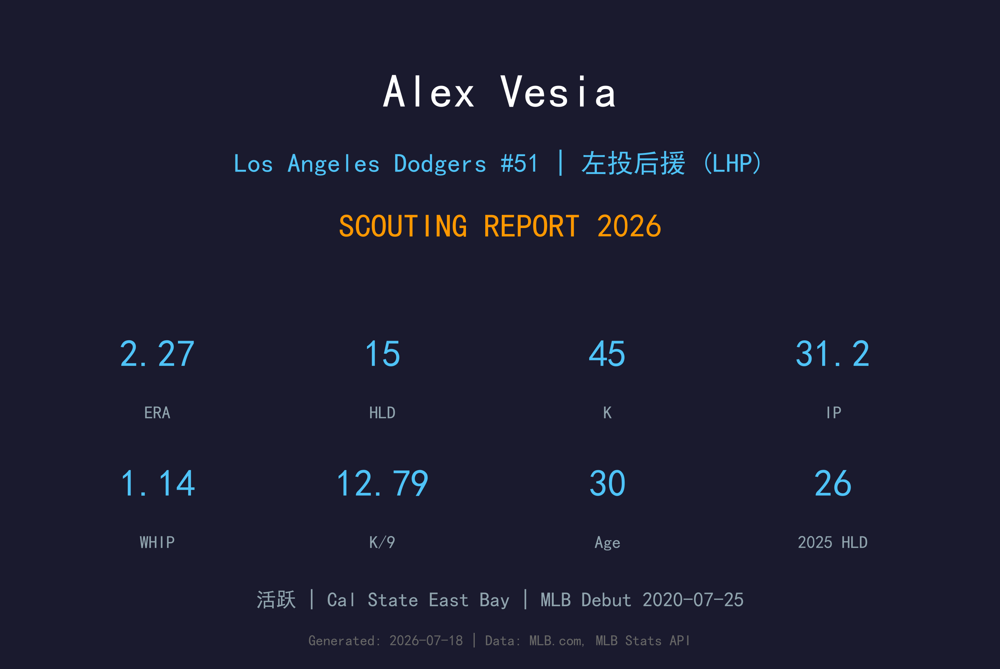
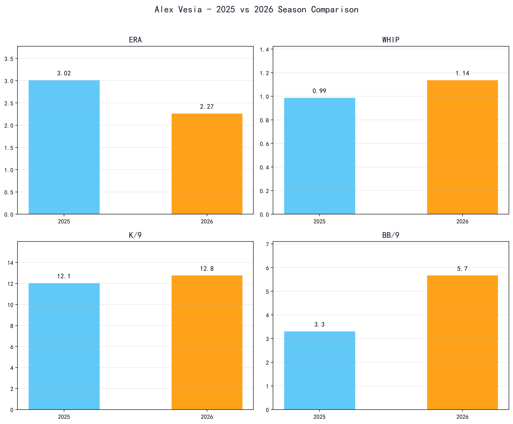
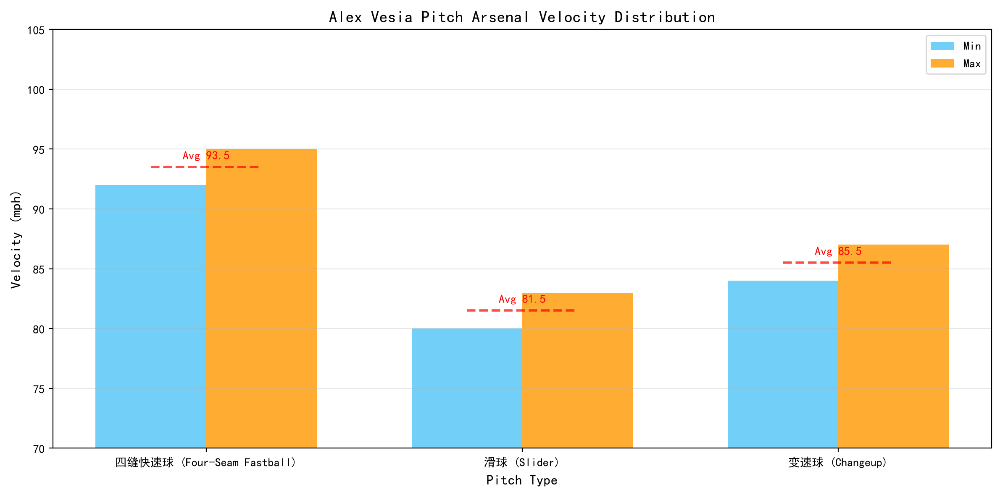
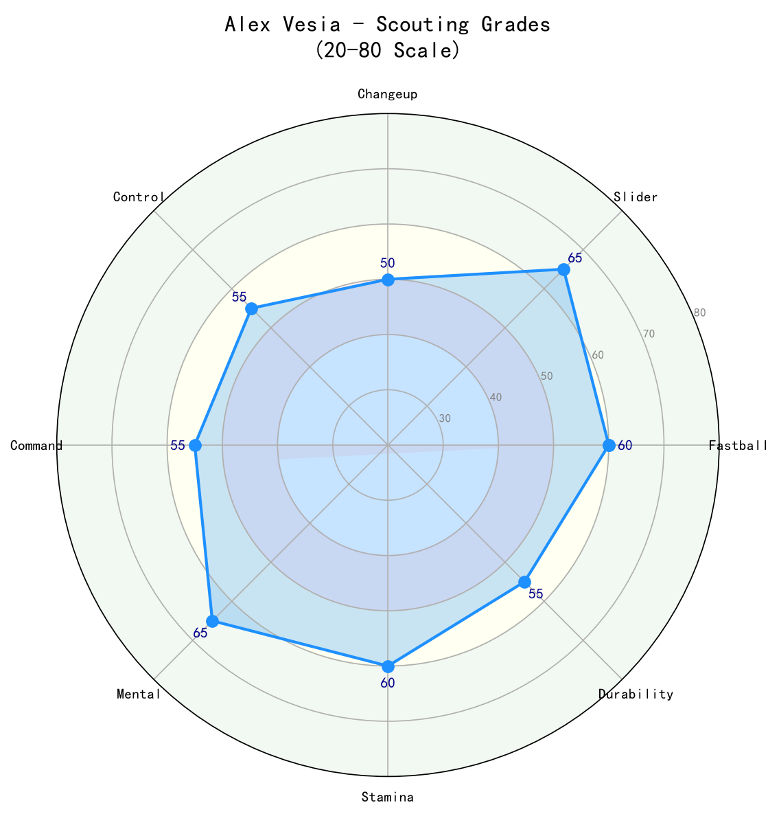

Los Angeles Dodgers #51 | 左投后援 (LHP) | 活跃

Alex Vesia 是道奇牛棚中稳定且多才多艺的左投后援。2024年他以 1.76 ERA 缔造生涯年，2025年则成为球队 hold 王（26次），2026年继续提供 elite 的三振能力（K/9 12.79）和稳定出局。
Vesia 的球风以高侧投、快速球上飘和锐利滑球为主。他能在第6到第8局承担 布局（setup）任务，也能在紧急情况下救援。他的职业生涯 ERA 仅 2.85，显示他已经从早期起伏成长为可靠的中继核心。
作为一名30岁的成熟后援，Vesia 是道奇争冠路上不可或缺的 lefty specialist 和 布局（setup）man。他的经验和三振能力让他在季后赛中极具价值。
来自 Cal State East Bay，2018年选秀第17轮（总第507顺位）被迈阿密马林鱼选中。低顺位起步，但凭借出色表现快速上升。
2020年7月25日代表马林鱼登上大联盟。早期成绩起伏，但展现了左投后援的潜力。
被交易至洛杉矶道奇，开始在新体系中成长。他的控球和球路组合在道奇教练团指导下逐步成熟。
1.76 ERA、.148 被打击率、0.99 WHIP，缔造多项生涯新高。世界大赛第2战仅用1球完成救援，创造历史。
68场出赛、26次 hold、3.02 ERA。成为道奇最信赖的中继左投，季后赛中也有关键表现。

📈 上图为近三年核心数据趋势。柱状图高度代表该年度表现，便于快速比较球员状态的上升或下滑。
| 赛季 | G | GS | W-L | ERA | IP | K | BB | WHIP | K/9 |
|---|---|---|---|---|---|---|---|---|---|
| 2025 | 68 | 0 | 4-2 | 3.02 | 59.2 | 80 | 22 | 0.99 | 12.07 |
| 2026 | 42 | 0 | 1-1 | 2.27 | 31.2 | 45 | 20 | 1.14 | 12.79 |

⚾ 上图为各球种球速区间（蓝=最低球速，橙=最高球速，红线=平均值）。球速差与位移差越大，打者越难锁定单一球路。
92-95 mph
Vesia 的压制核心。出手点高，具有 good ride，能在好球带上角制造大量挥空。他善于利用快速球抢 strike。
80-83 mph
主要出局球，sharp lateral break。对付左打者内角和右打者外角都很有效。是他 K/9 高企的关键。
84-87 mph
偶尔用来对付右打者，制造速度差。使用频率较低，但能增加配球变化。
Vesia 是道奇最值得信赖的左投 布局（setup）man。他的快速球上飘和 slider 的 组合 让他在面对左右打者时都有三振能力。2024年 .148 被打击率证明了他的压制力。
K/9 从12.07提升至12.79，ERA 降至2.27。虽然 WHIP 因保送增加而上升到1.14，但他的三振能力让他在 高杠杆 中仍然可靠。若能减少保送，ERA 有望逼近2.00。
26次 hold 显示教练团在领先时 frequently go to him。他能在第6-8局稳定局势，是世界大赛夺冠的重要拼图。
2025年8月曾因右斜肌拉伤进入 伤病名单，但复出后迅速找回状态。2026年目前42场出赛，显示健康状况良好。

三振能力 elite，经验丰富。若减少保送，将成为联盟顶级左投后援。
B+ 级 / 精英左投 布局（setup）man
Vesia 正处于后援投手的黄金期。他的球路组合和大赛经验让他在未来2-3年仍将是道奇牛棚的核心。改善控球是他迈向 elite 终结者 的关键。
2026-2027：继续担任 布局（setup）man，ERA 2.20-3.00，年出赛 65-70 场。
2028+：若控球进步，可能转型为终结者或 lefty specialist 王牌。
Alexander Victor Vesia 出生于加州圣地亚哥郡的 Alpine。他在 Cal State East Bay 大学就读，主修休闲管理，并曾在2019年亚利桑那秋季联盟后，在圣地亚哥州立大学橄榄球招募办公室实习。
2018年马林鱼在第17轮选中他，2020年登上大联盟。2021年被交易至道奇后，他在教练团指导下逐步成长为联盟最可靠的左投后援之一。2024年1月，他与妻子 Kayla 结婚。
Vesia 以勤奋和低调著称。他从低顺位新秀到世界冠军牛棚核心，是道奇球探和培养体系的又一成功案例。